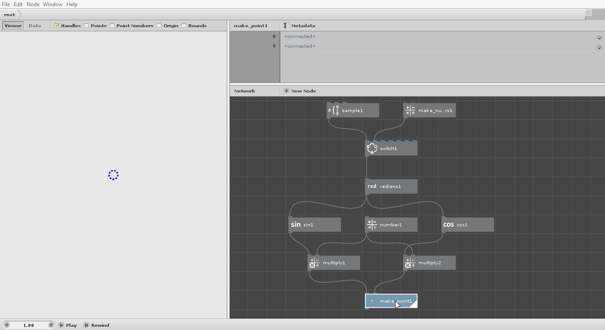
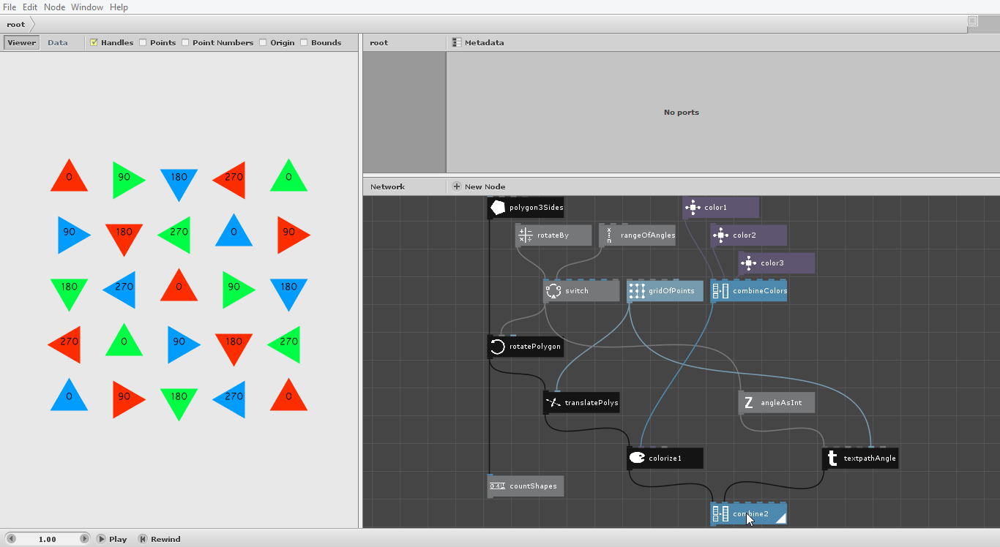
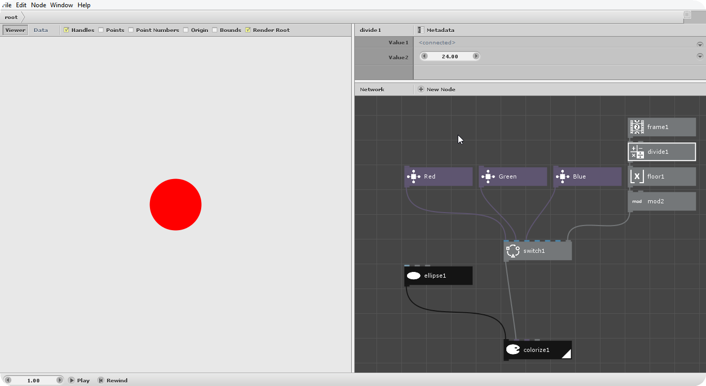
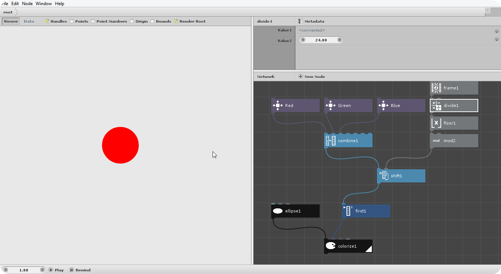

Learning NodeBox
My contribution to the NodeBox community. Read more about NodeBox at https://www.nodebox.net
What is NodeBox?
The following is the description on NodeBox from the official website'
Clever tools for curious creatives.
The NodeBox family of tools gives you the leverage to create generative design the way you want.
NodeBox Quick Overview
Interactive demo
Create points in a circular fashion Using list matching to create a more dynamic polygonal grid pattern

Achieve same results using different nodes
Animate the color of a circle every second by cycling between red, green and blue colorsApproach #1  Approach#2 